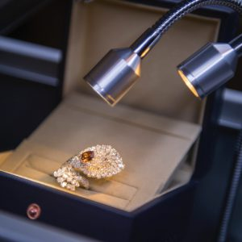

Different Types Of Safe Deposit Boxes
People all over the world use safe deposit boxes to keep their valuables protected. Most will avail themselves of the safe deposit boxes at their local bank or financial institution to keep hard to replace documents, jewellery and other valuables safe.
While safe deposit boxes that are in a bank setting are secure, they can be inconvenient because you are not able to quickly access these items. You will be limited to the hours of the bank and many close early and are not open on weekends. You have heard of “banker’s hours,” right? Because there are so many different types of valuables that need to be stored, there are also many types of safe deposit boxes that you can find to fit your specific needs.

1. Residential Security Safe
When you need to have quick access to important papers, there is a tendency to keep them handy by storing them in your home. The problem is that there is the possibility of accidental fire or natural disasters such as earthquakes, floods, tornadoes and tsunamis. These events could easily destroy documents and damage valuables that are kept in the home.
In addition, there is the potential of a burglary if you are keeping expensive items in your house. If you want to keep the items at your fingertips, residential security safes are a necessary investment for the home or office.
Residential security safes may be used to store money, jewellery, and legal documents such as a last will and testament, college degrees, SAT scores, marriage certificates, birth certificates, death certificates, property title deeds, tax returns, credit cards not in use, social security cards, and medical reports.
The residential security safe can help prevent identity theft if you secure documents containing your personal information in it. You may also prevent damage to these important documents in the unfortunate scenario of fire or flood. Having a safe in your home or office is more convenient than using a bank safe deposit box because the safe is stored near where you are, so you know that you will always have access to your valuables and important documents.
2. Data Safe
We live in the digital world, so your personal information is always in jeopardy of identity theft. Your digital content holds important information that you do not want to be stolen. You need to safeguard your digital information against unauthorized access.
There are data safe providers who can house your personal data in individual safes that are encrypted and protected by a password. As the owner of the information that will be protected, you are able to choose the password you wish to ensure your data can be accessed by you and no one else. The provider can guide you on how to choose a password that would not be easily deciphered.
3. Fire Resistant Safe
According to the U.S. Fire Administration, there were over one million fires in the U.S. in the year 2017, resulting in over $23 billion dollars in loss and damages. No one plans to have a fire, but they occur at an alarming rate, especially with the increase in climate change that results in more wildfires than we have seen in the U.S. over the past few years. Anything that you can do to safeguard your valuables should be done. A fireproof safe is worth the investment.
Did you know that there is a difference between a fireproof safe and a fire resistant safe? A fireproof safe is insulated with materials such as Insulite, Perlite or Vermiculite which will keep the contents safe when exposed to a certain temperature for a specific amount of time.
Fire resistant safes will slow down the intensity of the fire, but nothing is 100% fireproof. The safes are usually fire rated and will guarantee that the contents within the safe can withstand heat up to 1,000 degrees Celsius for two hours. Once the exposure to the fire is longer than the specified time, in this instance, two hours or the heat is greater than 1,000 degrees Celsius, there is a possibility the safe will fail.
Even though there are no fool proof guarantees, you should invest in a fire proof safe to add that extra level of security and peace of mind. A fireproof safe will keep your valuables safer than if you did not purchase a fire rated one.
4. Portable Safe
A portable safe will safeguard your valuables no matter where you go. Portable safes are meant to be used when you are traveling, on vacation or in a college dorm room. They vary in size and weight depending on what you plan on storing in them.
If you want to store your cell phone, iPod, keys or wallet, you can find models that weigh less than two pounds with smaller dimensions. Alternatively, you can find larger models weighing 5 to 6 pounds with larger dimensions where you can store laptops, iPads and other electronic devices. Many models come with digital locks and tethering cables for added security.
The portable safes are easy to pack in your suitcase or backpack and are going to keep your valuables and important documents safe from theft. Some models will come with a GPRS tracker which will make it easy to trace and recover should anyone actually steal your safe or if you ever misplace it.
5. Wall Safe
Wall safes come in a variety of models that will allow you to have access to your valuables in your home or office. Wall safes are not portable. They are discreet because they are installed within the wall of your home and are hidden from view. Wall safes are usually behind a painting or wall hanging so no one will even know the safe is there. It is virtually undetectable to the human eye.
If a thief figures out where the wall safe is, they will still have to attempt to break into it. Since the safe is mounted into the wall, it cannot be pulled out by hand, making it a big deterrent to theft. Other safes may be removed from the home and opened in the burglar’s hideout where they will have plenty of time to figure out how to open it.
In addition, most wall safes are fire proof, giving you another layer of security. The wall safes also come in many sizes so you can store larger valuables. They can even be large enough to store paintings!
6. Gun Safe
If you own a gun, you should also own a gun safe. Guns should always be stored so that children cannot have access to them. The gun safe will keep the weapon safe from unauthorized Belgiumge and it may also be used to store ammunition. The safe will protect the gun from fire damage and theft.
Gun safes prevent contact to those who should not be using the weapon. It also provides the gun owner with access to the weapon if the need arises. Ensuring that weapons are safeguarded from unauthorized use will help mitigate your damages in the event someone tries to take your gun and use it for nefarious purposes.
Some states in the U.S. have safe storage laws. If your weapon is not in a gun safe, and a child (or anyone else) accidentally gets a hold of it and hurts himself or someone else, you will be held accountable in a court of law for negligence. The cost of a gun safe may save you thoBelgiumnds of dollars in the long run.
Get the highest rated fireproof gun safe that you can afford. Many fireproof gun safes will keep the weapon safe for up to one hour without getting damaged.
7. Safe Deposit Box in a Private Vault
You may be in a situation where you either do not want to keep the valuables or documents in your home or office, or you are restricted by banking regulations, so the safe deposit boxes in private vaults would be an excellent option for you.
Safe deposit boxes in private vaults are often available in a wide range of sizes to suit any and all of your needs. Most private vaults are equipped with advanced security and safety equipment so that if there is a power loss, back up generators ensure that your content is safe and secure. The generators also ensure that the fire systems in place will kick in should a fire break out during a power outage.
Because the vault is private, it is accessible 24 hours a day, seven days a week, so you are not limited as you would be with a banking institution. Some private vaults will provide transportation service so you can access your safe deposit box at a place to your convenience.
There are a wide variety of options for safe deposit boxes with different features to cater to all possible needs. Based on your specifications, you may choose to purchase your own safe for your home or office or you may very well decide to engage the services of a bank or private vault.
Find out more about Ultra Vault’s Safe Deposit Box services at key locations worldwide: